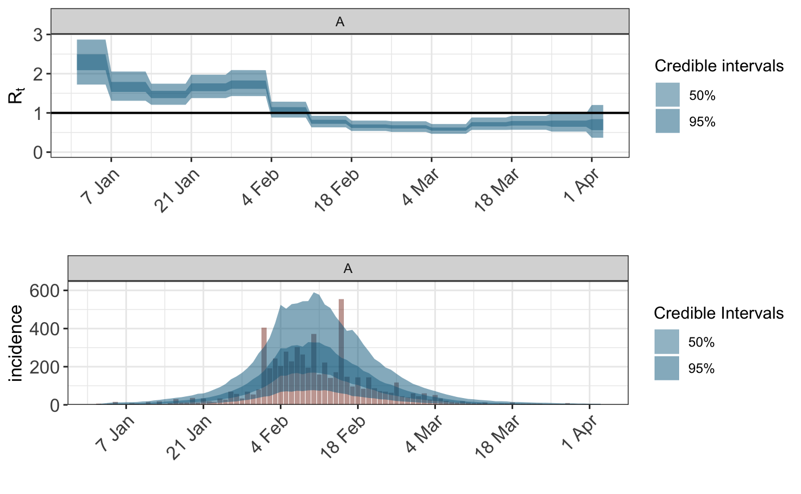

This vignette describes how changes in \(R_t\) can be modelled with just incidence data and discrete SI.
We use the Flu data from 1918 as an example.
## $incidence
## [1] 5 1 6 15 2 3 8 7 2 15 4 17 4 10 31 11 13 36 13
## [20] 33 17 15 32 27 70 58 32 69 54 80 405 192 243 204 280 229 304 265
## [39] 196 372 158 222 141 172 553 148 95 144 85 143 87 73 70 62 116 44 38
## [58] 60 45 60 27 51 34 22 16 11 18 11 10 8 13 3 3 6 6 13
## [77] 5 6 6 5 5 1 2 2 3 8 4 1 2 3 1 0
##
## $si_distr
## [1] 0.000 0.233 0.359 0.198 0.103 0.053 0.027 0.014 0.007 0.003 0.002 0.001flu <- Flu1918 flu$incidence <- c(rep(NA,1),flu$incidence) ## pad before initialisation flu$fludate <- as.Date("1918-01-01")+seq(0,along.with=flu$incidence) obs <- !is.na(flu$incidence) args <- list(formula=Rt(country,date)~rw(date,3), data=data.frame(country="A",date=flu$fludate), obs=list( incidence=list( odata=data.frame(country="A", date=flu$fludate[obs],incidence=flu$incidence[obs]), rates=list(means=data.frame(factor("A"),1), scale=.01), pvec=c(.25,.25,.25,.25) ) ), seed_days=7, algorithm="sampling", r0=3, pops=data.frame(country="A",pop=1e6), si=flu$si, prior = rstanarm::normal(location=0,scale=.2), prior_intercept = rstanarm::normal(location=0,scale=.5), prior_tau = rstanarm::exponential(rate=4) ) args$sampling_args <- list(iter=1000,control=list(adapt_delta=0.95,max_treedepth=15),seed=713)
fit <- do.call("epim",args)
library(gridExtra) grid.arrange(plot_rt(fit), plot_obs(fit,"incidence"), nrow=2)
